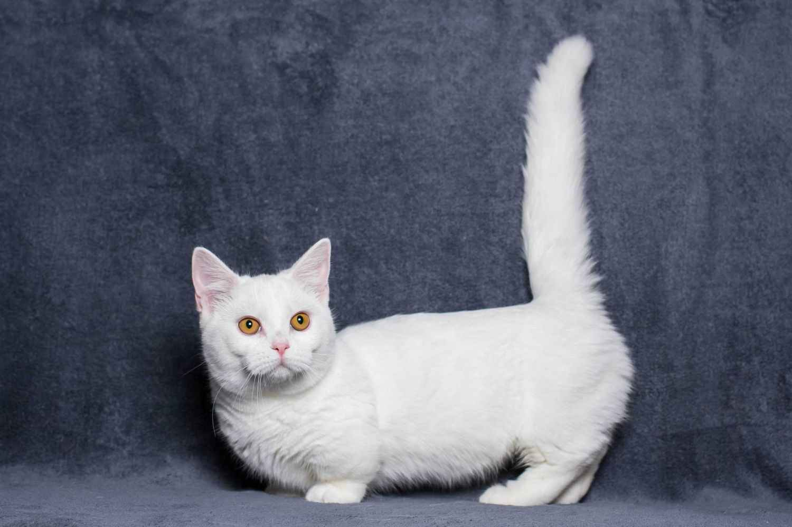

Манчкины известны своим игривым и дружелюбным характером.Эта порода отличный выбор для тех,
кто ищет дружелюбного, игривого и преданного питомца, готового стать верным другом и компаньоном.
Характер
Доброжелательность: Эти кошки обычно очень общительны и легко ладят с детьми и другими животными,
что делает их отличными компаньонами.
Игривость: Манчкины остаются игривыми на протяжении всей жизни и любят активные игры, что делает их
веселыми питомцами.
Интеллект: Манчкины умны и легко обучаются, что позволяет им выполнять команды и трюки.
Адаптивность: Они хорошо приспосабливаются к различным условиям жизни, будь то квартира или дом с
садом.
Привязанность: Манчкины часто привязываются к своим владельцам и любят проводить время рядом с ними.

Уход за питомцем
Уход за манчкинами требует регулярного внимания:
Чистка шерсти: Манчкины могут иметь как короткую, так и длинную шерсть, поэтому рекомендуется
вычесывать их 1-2 раза в неделю, чтобы предотвратить образование колтунов и удалить выпадающие
волосы.
Уход за зубами: Регулярная гигиена зубов важна для предотвращения стоматологических заболеваний.
Рекомендуется чистить зубы раз в неделю.
Уход за глазами и ушами: Периодически проверяйте глаза и уши на наличие загрязнений и очищайте их
при необходимости.
Кормление: Сбалансированное питание с высоким содержанием белка и необходимых витаминов поможет
поддерживать здоровье вашей кошки.
Физическая активность: Манчкины нуждаются в регулярных играх и физических упражнениях для
удовлетворения своей активности.
Плюсы:
Дружелюбный и игривый характер: Отлично ладят с детьми и другими животными.
Привязанность: Манчкины любят быть рядом с владельцами и являются преданными компаньонами.
Интеллект: Легко обучаются и могут выполнять команды, что делает их интересными питомцами.
Адаптивность: Хорошо приспосабливаются к различным условиям жизни.
Минусы:
Склонность к заболеваниям: Могут быть предрасположены к некоторым генетическим заболеваниям,
таким как проблемы с позвоночником из-за коротких ног.
Уход за шерстью: В зависимости от типа шерсти могут требовать регулярного вычесывания.
Нуждаются в активности: Им нужны физические нагрузки и игры для поддержания здоровья.